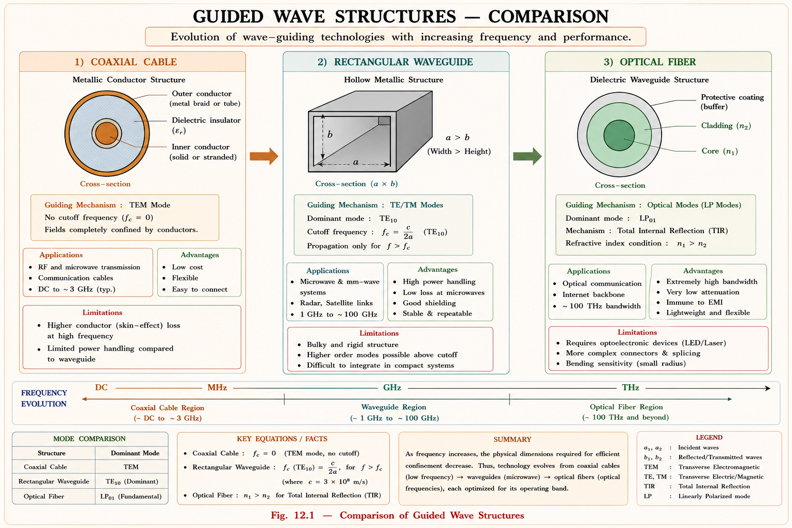
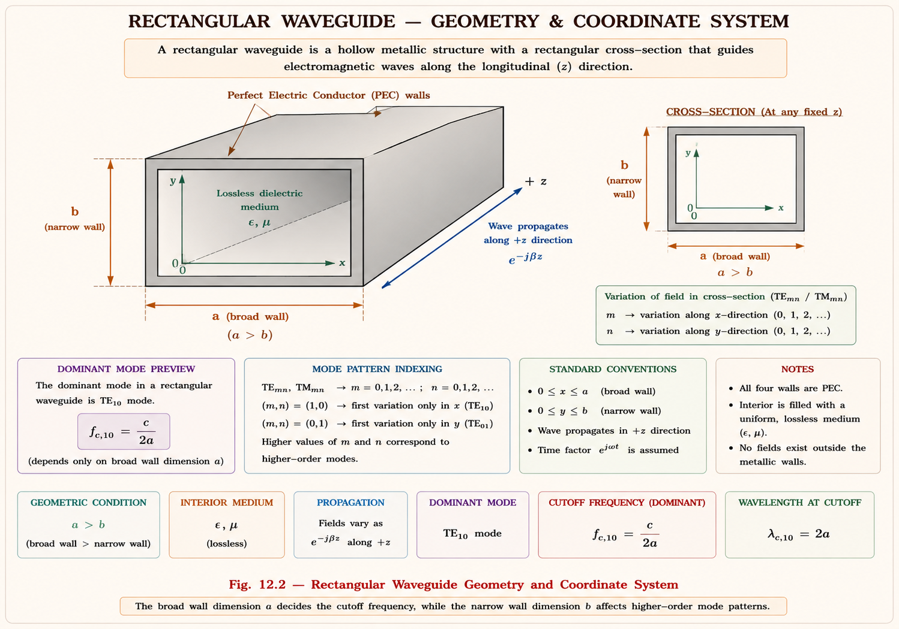
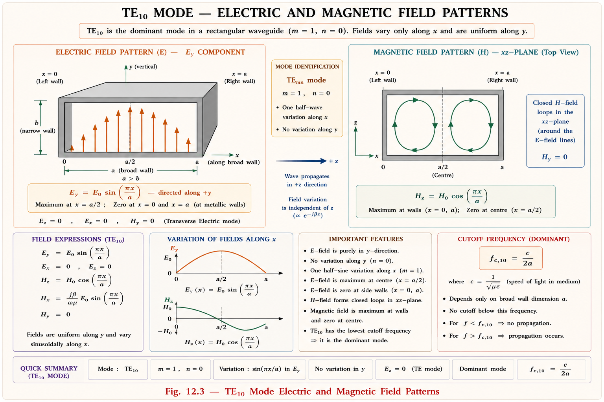
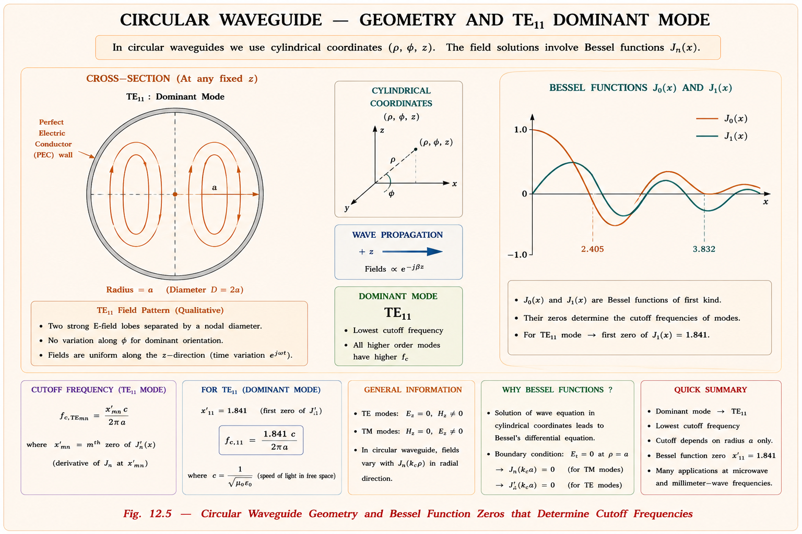
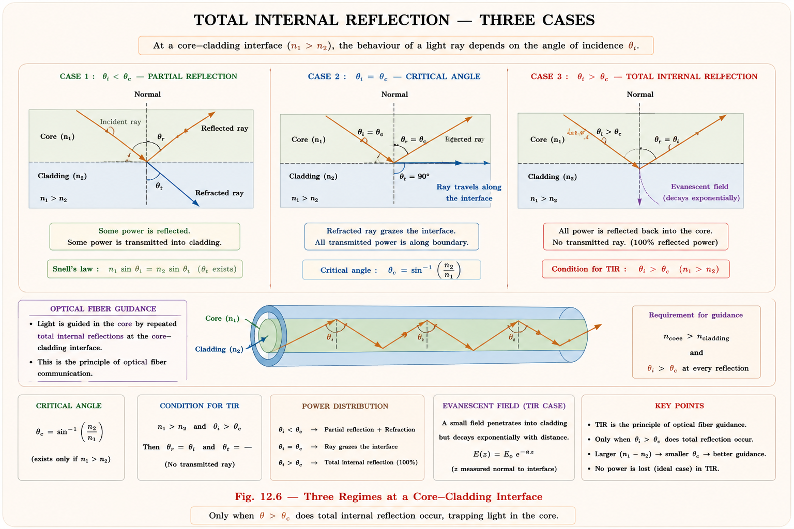
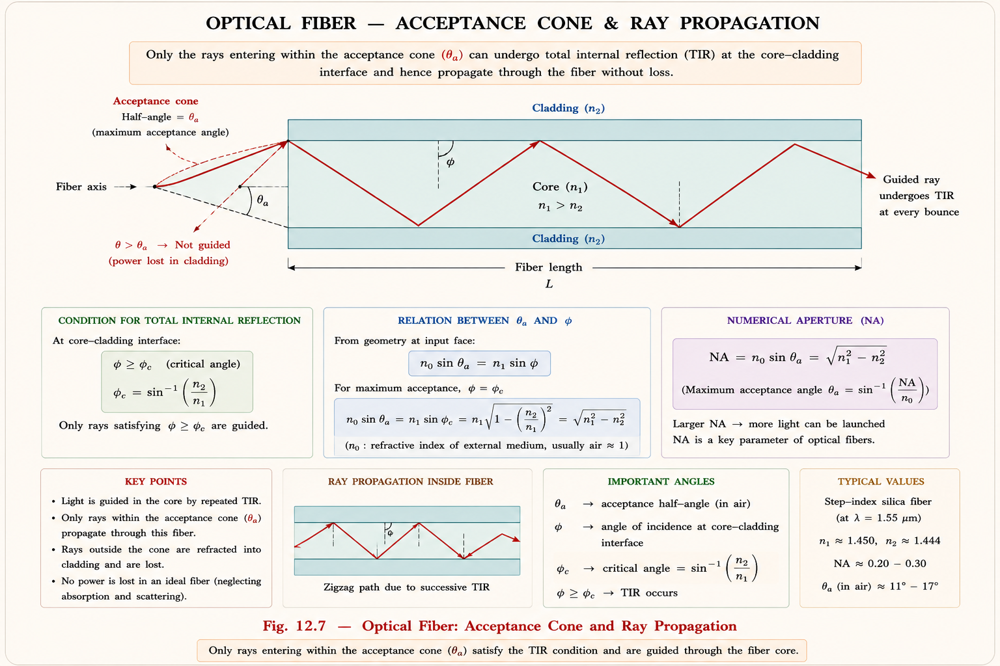
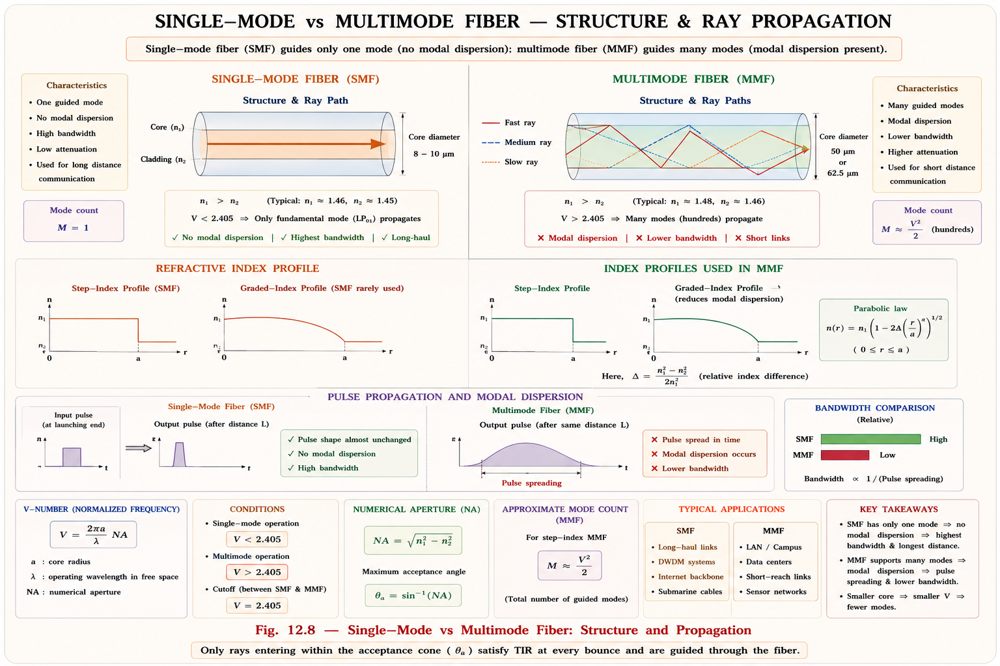

Rectangular and circular waveguides — TE and TM modes, cutoff frequencies, dominant
modes — and optical fiber communication: total internal reflection, numerical aperture, acceptance
angle, single-mode and multimode fibers. Complete GATE, IES, and PSU exam coverage with full derivations
and solved examples.
Imagine trying to send a microwave signal at 10 GHz over a coaxial cable for 100 metres. The cable works
perfectly at audio frequencies, but at microwave frequencies the conductor losses become enormous — the
signal barely survives 10 metres. Something fundamentally different is needed. That something is the
waveguide.[1]
A waveguide is a hollow metallic tube — rectangular or circular — that guides electromagnetic waves along
its length by repeated total internal reflections off its perfectly conducting walls. There are no
central conductors, no dielectric losses from insulation, and the cross-section geometry itself
determines which frequencies can propagate. This makes waveguides the backbone of radar systems,
satellite uplinks, microwave ovens, and high-power transmitters.
📡
Engineering Insight
A waveguide acts as a high-pass filter. Only frequencies above the cutoff
frequency \(f_c\) propagate. Below \(f_c\), waves are evanescent — they decay exponentially and
carry no real power. This property allows precise frequency selectivity in radar and satellite
systems.

Fig 12.1 — Evolution of guided-wave structures from coaxial cable to optical fiber.
Real-World Applications of Waveguides
Radar Systems
▸X-band radar (8–12 GHz) uses WR-90 waveguide
▸Low loss at high power — essential for transmitter output
▸Weather radar, air traffic control, naval radar
Satellite Communication
▸Ku-band (12–18 GHz) feeds for dish antennas
▸Low-noise amplifier (LNA) connections
▸Transponder input/output sections
Microwave Ovens
▸2.45 GHz power from magnetron to cavity
▸Short rectangular waveguide section used
▸TE₁₀ mode carries kilowatt-level power safely
Medical & Industrial
▸Linear particle accelerators (LINAC) use waveguide cavities
▸Microwave hyperthermia cancer treatment
▸Industrial microwave heating systems
12.2
Rectangular Waveguide — Structure & Assumptions
A rectangular waveguide is a hollow metallic pipe of rectangular cross-section with interior dimensions
a (width) and b (height), where by convention \(a > b\). The walls are
assumed to be perfect electric conductors (PEC), and the interior is filled with a
lossless dielectric (usually air, \(\varepsilon_r = 1\), \(\mu_r = 1\)).[1]

Fig 12.2 — Rectangular waveguide geometry. Waves propagate in z-direction; the
cross-section defines mode patterns.
Based on: Hayt & Buck, Engineering Electromagnetics, 8th ed., Ch. 13
Wave Equation Inside the Waveguide
For a source-free lossless region, Maxwell's equations reduce to the vector Helmholtz
equation. Assuming time-harmonic fields \(e^{j\omega t}\) and propagation in the
z-direction as \(e^{-j\beta z}\), we write all field components in terms of the z-components \(E_z\) and
\(H_z\).[2]
If \(E_z = 0\): only \(H_z\) exists as the z-component → Transverse Electric (TE)
modes. If \(H_z = 0\): only \(E_z\) exists → Transverse Magnetic (TM)
modes. Both zero is the TEM mode — impossible in a single-conductor waveguide. This
is the fundamental reason waveguides cannot support TEM waves.
12.3
TE Modes — Transverse Electric (TEmn)
In TE modes, the electric field has no z-component \((E_z = 0)\). The entire electric
field lies in the transverse (xy) plane. The magnetic field has all three components, including \(H_z
\neq 0\). We solve for \(H_z\) first, then derive all transverse fields from it.[1]
Deriving Hz — Separation of Variables
The Helmholtz equation for \(H_z\) is solved using separation of variables. Let \(H_z(x,y) = X(x) \cdot
Y(y)\):
The general solutions are sinusoidal. Now we apply boundary conditions (BCs): at PEC
walls, the tangential E must be zero. Since \(E_z = 0\) everywhere for TE modes, the condition that
\(E_x = 0\) at \(y = 0, b\) and \(E_y = 0\) at \(x = 0, a\) translates — via the transverse field
equations — to:
⚠️
Boundary Condition Logic (TE modes)
For TE modes, \(E_z = 0\). Using the transverse relation for \(H_x\): \(E_y \propto \partial
H_z/\partial x\) at walls \(x=0,a\) requires \(\partial H_z/\partial x = 0\). Similarly
\(\partial H_z/\partial y = 0\) at \(y = 0, b\). This forces cosine solutions, not sine.
The solution satisfying all BCs is:
Hz for TEmn Modes
$$H_z = H_0 \cos\!\left(\frac{m\pi x}{a}\right)\cos\!\left(\frac{n\pi y}{b}\right)e^{-j\beta z}$$
$$\text{where } m = 0, 1, 2, \ldots \quad n = 0, 1, 2, \ldots \quad (m = n = 0 \text{ not allowed})$$
Here m is the number of half-wave variations in the x-direction and n
in the y-direction. The pair (m, n) identifies the mode.
TE₁₀ — The Dominant Mode (Most Important for GATE)
Setting \(m = 1, n = 0\) gives the TE₁₀ mode — the mode with the lowest cutoff
frequency. It is the dominant mode of a rectangular waveguide and the most practically important.[2]

Fig 12.3 — TE₁₀ dominant mode: E-field is purely in y-direction with sinusoidal
variation; H-field forms closed loops in xz-plane.
TE₁₀ Mode Simplified Field ExpressionsE_y= E₀ sin(πx/a) e^(−jβz) ← Only
non-zero E componentH_x= −(β/ωμ) E₀ sin(πx/a) e^(−jβz)
H_z= j(π/ωμa) E₀ cos(πx/a) e^(−jβz)
All other components = 0
12.4
TM Modes — Transverse Magnetic (TMmn)
In TM modes, the magnetic field has no z-component \((H_z = 0)\). We solve for \(E_z\),
which must vanish at all four conducting walls (tangential E = 0 on PEC surface).[1]
Ez for TMmn — Boundary Conditions Force Sine Solutions
$$E_z = E_0 \sin\!\left(\frac{m\pi x}{a}\right)\sin\!\left(\frac{n\pi y}{b}\right)e^{-j\beta z}$$
$$m = 1, 2, 3, \ldots \quad n = 1, 2, 3, \ldots \quad \textbf{(neither m nor n can be zero)}$$
⚠️
Critical GATE Trap — TM₀ₙ and TMₘ₀ Do Not Exist!
For TM modes, both m ≥ 1 AND n ≥ 1 are required. If either m = 0 or n = 0, then \(E_z = 0\)
everywhere (sine of zero is zero), which means all fields vanish — no mode exists. Therefore
TM₁₁ is the lowest-order TM mode. This is frequently tested in GATE.
\(\partial H_z/\partial n = 0\) on walls (Neumann)
\(E_z = 0\) on walls (Dirichlet)
x-variation
Cosine (m = 0 allowed)
Sine (m ≥ 1 required)
y-variation
Cosine (n = 0 allowed)
Sine (n ≥ 1 required)
Lowest mode
TE₁₀ (m=1, n=0)
TM₁₁ (m=1, n=1)
Dominant mode?
Yes — TE₁₀
No — TE₁₀ has lower fc
12.5
Cutoff Frequency — The Most Important Formula
The cutoff frequency is the frequency at which propagation constant \(\beta = 0\) — the transition
between propagation and attenuation. Below \(f_c\), waves decay exponentially (evanescent). Above
\(f_c\), waves propagate with phase constant \(\beta\).[2]
Fig 12.4 — Mode spectrum for rectangular waveguide with a = 2b. TE₁₀ has the lowest
f_c. Single-mode operation band: c/2a < f < c/a.
💡
Memory Trick — Cutoff Frequency Ordering
For \(a = 2b\) (standard): TE₁₀ → TE₂₀ = TE₀₁ → TE₁₁ = TM₁₁ → TE₃₀. Mnemonic:
"Ten Twenty-Double Eleven Thirty". In the single-mode band, only TE₁₀
propagates — this is why waveguides are always operated here.
Standard Waveguide Designations (GATE Reference)
Designation
a (mm)
b (mm)
f_c (TE₁₀) GHz
Operating Band
Applications
WR-90
22.86
10.16
6.56
X-band (8–12 GHz)
Radar, satellite
WR-62
15.80
7.90
9.49
Ku-band (12–18 GHz)
Satellite uplink
WR-28
7.11
3.56
21.1
Ka-band (26–40 GHz)
Millimeter wave
WR-284
72.14
34.04
2.08
S-band (2–4 GHz)
ATC radar
12.6
Wave Velocities & Wave Impedance in Waveguide
A wave in a waveguide travels at velocities different from free-space due to the cutoff effect. There are
three distinct velocities to understand — each physically distinct and all frequently tested.[2]
Phase velocity exceeds c — this does NOT violate relativity because no information
travels at \(v_p\). Information travels at group velocity \(v_g < c\).
Think of ripples on a pond: individual crests (phase) move faster than the
overall wave packet (group), which carries the actual energy.
Summary — Wave Parameters in Rectangular
WaveguideParameter TE Mode TM ModePhase velocity v_p = c/√(1−(fc/f)²) Same formula
Group velocity v_g = c·√(1−(fc/f)²) Same formula
vp × vg= c²=
c²Wave impedance Z_TE > η (377 Ω) Z_TM < η (377 Ω)
At f = fc β = 0, Z→∞ (TE) β = 0, Z→0 (TM)
As f → ∞ v_p→c, Z→η v_p→c, Z→η
A circular waveguide is a hollow metallic cylinder of inner radius a. The
analysis uses cylindrical coordinates \((\rho, \phi, z)\) and the solutions involve
Bessel functions — the cylindrical analogue of sinusoids in Cartesian
coordinates.[1]

Fig 12.5 — Circular waveguide geometry and Bessel function zeros that
determine cutoff frequencies.
Cutoff Frequency — Circular Waveguide
$$f_{c,np}^{TE} = \frac{p'_{np}\cdot c}{2\pi a} \qquad f_{c,np}^{TM} = \frac{p_{np}\cdot
c}{2\pi a}$$
$$\text{where } p'_{np} = n\text{th zero of }J'_p(\cdot), \quad p_{np} = n\text{th zero of
}J_p(\cdot)$$
Key Zeros of Bessel Functions (GATE Table)
Mode
Bessel Zero
Value
Cutoff (f_c × 2πa/c)
Mode Order
TE₁₁
p'₁₁
1.841
1.841
Dominant (lowest)
TM₀₁
p₀₁
2.405
2.405
2nd lowest
TE₂₁
p'₂₁
3.054
3.054
3rd
TM₁₁
p₁₁
3.832
3.832
4th
TE₀₁
p'₀₁
3.832
3.832
Degenerate with TM₁₁
🔑
Dominant Mode — TE₁₁ in Circular Waveguide
Unlike rectangular waveguide where dominant mode is TE₁₀, the dominant mode of a
circular waveguide is TE₁₁ (Bessel zero 1.841 — smallest of
all). The degenerate TE₀₁ and TM₁₁ modes (both at zero 3.832) are important:
TE₀₁ has zero wall current in the axial direction, giving extremely low
loss at high frequencies — used in long-distance waveguide communication.
12.8
Total Internal Reflection — Foundation of Optical Fiber
An optical fiber guides light using a phenomenon from basic optics: Total
Internal Reflection (TIR). When light travels from a denser medium (core,
refractive index \(n_1\)) to a rarer medium (cladding, \(n_2 < n_1\)) at an angle
exceeding the critical angle, 100% of the light is reflected back into the core. No
energy is transmitted into the cladding.[3]

Fig 12.6 — Three regimes at a core-cladding interface. Only when θ
> θ_c does total internal reflection occur, trapping light in the core.
Imagine you are underwater looking up. At a small angle to vertical you can see
the sky above. But tilt your head far enough and the surface becomes like a
perfect mirror — you see only the pool bottom reflected. The angle where this
switch happens is the critical angle. Light in an optical fiber experiences this
at every bounce along the core-cladding boundary.
12.9
Numerical Aperture & Acceptance Angle
Not all light injected into the fiber end-face is guided. Only light entering within a
cone of half-angle \(\theta_a\) (the acceptance angle) will undergo TIR
at every bounce inside the core and be guided to the output.[3]

Fig 12.7 — Only rays entering within the acceptance cone (θ <
θ_a) undergo TIR at every bounce and are guided. Rays outside the cone leak into
cladding.
Derivation of Numerical Aperture
Apply Snell's law at the air-fiber entrance face. At the critical ray entering at angle
\(\theta_a\) in air (refractive index \(n_0 \approx 1\)):
NA = "Not just \(n_1\), minus \(n_2\) squared, all square rooted." — i.e., \(NA =
\sqrt{n_1^2 - n_2^2}\). Think of it as the hypotenuse of a right triangle with
legs \(n_1\) and \(n_2\) — NA is the length difference resolved. Larger NA →
wider acceptance cone → easier to launch light but more modal dispersion.
Physical Significance of NA
NA Value
Acceptance Angle θ_a
Light Collection
Practical Use
0.10
5.7°
Low — narrow cone
Single-mode fiber, long haul
0.20
11.5°
Moderate
Standard SM fiber
0.40
23.6°
Good
Graded-index MM fiber
0.50
30°
High — wide cone
Step-index MM fiber, sensors
⚠️
Common GATE Mistake
Students confuse the acceptance angle \(\theta_a\) (measured in air outside
fiber, from fiber axis) with the critical angle \(\theta_c\) (measured from
normal to core-cladding interface inside the fiber). They are
complementary: \(\phi_{min} = 90° - \theta_c\) where
\(\phi_{min}\) is the minimum ray angle inside the core for TIR. These are NOT
the same angle.
12.10
Single-Mode vs Multimode Optical Fiber
An optical fiber can support multiple guided modes simultaneously, analogous to multiple
modes in a metal waveguide. The number of modes is controlled by the
V-number (normalised frequency), which depends on core radius,
wavelength, and NA.[3]
V-Number (Normalized Frequency) 🟢 HIGH
PROBABILITY
$$V = \frac{2\pi a}{\lambda}\cdot NA = \frac{2\pi a}{\lambda}\sqrt{n_1^2 - n_2^2}$$
$$\text{Single-mode condition: } V < 2.405$$
The value 2.405 is the first zero of the Bessel function \(J_0\) — exactly the
same number that appears in the circular waveguide TM₀₁ cutoff. This is not a
coincidence: the modal analysis of fiber uses the same Bessel function
mathematics.

Fig 12.8 — Single-mode fiber (left) supports only one
guided mode; multimode (right) supports hundreds. Graded-index profile in
MMF reduces modal dispersion by equalising path lengths.
1550 nm is the minimum-loss window (0.2 dB/km).
1310 nm is the zero-material-dispersion wavelength.
DWDM systems operate in the C-band (1530–1565 nm) and L-band
(1565–1625 nm) around 1550 nm. Erbium-Doped Fiber Amplifiers (EDFA)
amplify signals at 1550 nm — matching the minimum-loss window is not
coincidental.
12.11
Solved Numerical Examples
EXAMPLE 12.1Cutoff Frequency — Rectangular Waveguide
(Basic)
An air-filled rectangular waveguide has dimensions a =
4.8 cm and b = 2.4 cm. Find the cutoff frequencies of the first four
modes and identify the dominant mode.
Solution
Use: \(f_{c,mn} =
\dfrac{c}{2}\sqrt{\left(\dfrac{m}{a}\right)^2+\left(\dfrac{n}{b}\right)^2}\)
with \(c = 3\times10^{10}\) cm/s
Mode order: TE₁₀ (3.125 GHz) → TE₂₀ = TE₀₁ (6.25 GHz) → TE₁₁
= TM₁₁ (6.99 GHz). TE₁₀ is the dominant
mode. Single-mode band: 3.125 to 6.25 GHz.
EXAMPLE 12.2Phase and Group Velocity in Waveguide (GATE
Level)
An air-filled rectangular waveguide operates in TE₁₀
mode at 10 GHz. The guide has a = 2.5 cm. Find: (a) cutoff
frequency, (b) phase velocity, (c) group velocity, and (d) verify
v_p × v_g = c².
A step-index fiber has n₁ = 1.48, n₂ = 1.46, core
radius a = 4 μm. Find the V-number at λ = 1310 nm and determine if
it operates in single-mode or multimode.
V = 4.65 > 2.405. Therefore, the fiber is NOT
single-mode — it supports multiple modes at
1310 nm. To achieve single-mode operation, either reduce
core radius (a < ≈ 3.3 μm) or increase λ. Standard ITU-T
G.652 single-mode fiber uses a ≈ 4.5 μm with smaller NA ≈
0.12, giving V ≈ 2.1 at 1310 nm.
12.12
GATE & IES Previous Year Questions
GATE Questions — Rectangular Waveguide
GATE ECDominant Mode Cutoff FrequencyGATE 2019
The cutoff frequency of the dominant mode in a rectangular air-filled
waveguide with a = 5 cm, b = 3 cm is:
A step-index fiber supports single-mode propagation when its V-number
satisfies:
(A) V < 1.841
(B) V < 2.405 ← First zero of J₀
Bessel function; below this only HE₁₁ (TE₀₁ analog) propagates
(C) V < 3.832
(D) V < π
IES Questions
IES E&TWave Impedance ComparisonIES 2019
For a TE mode in a rectangular waveguide, the wave impedance is:
(A) Equal to the intrinsic impedance η of free space
(B) Greater than η ← Z_TE =
η/√(1−(f_c/f)²) > η since denominator < 1
(C) Less than η
(D) Zero at cutoff
IES E&TDominant Mode — Circular vs
RectangularIES 2021
The dominant mode in a circular waveguide is TE₁₁, whereas in a
rectangular waveguide it is TE₁₀. The reason is that:
(A) Circular waveguides have larger diameter
(B) The mode order is determined by Bessel
function zeros for circular, and by (m/a) for rectangular — the
smallest Bessel zero (1.841 for TE₁₁) determines the dominant
mode of circular guides
(C) TE₁₀ cannot fit in a circle
(D) Circular guides support TEM modes
🤖 Ask Aarova AI — Waveguides & Optical
Fiber
Ask any conceptual, derivation, or numerical question on this chapter.
Type below or tap a suggestion.
Derive
cutoff frequencyWhy
TM₁₀ doesn\'t existDerive
NA from scratchSMF
vs MMF comparisonPhase
velocity > c?Numerics:
a=3 cm, 8 GHz
Chapter Summary
Rectangular WG — TE
\(H_z\) drives all fields. Cosine variation in \(x\) and \(y\). \(m,
n \ge 0\), not both zero. \(f_c =
\frac{c}{2}\sqrt{\left(\frac{m}{a}\right)^2 +
\left(\frac{n}{b}\right)^2}\). Dominant: \(\text{TE}_{10}\). Sine in
TM from \(E_z\).
🟢 HIGHNumerical
Aperture — \(\text{NA} = \sqrt{n_1^2 - n_2^2}\);
acceptance angle
calculation is standard GATE numerical.
🟢 HIGH\(V < 2.405\) for
SM
fiber — the \(2.405\) threshold (Bessel \(J_0\) first
zero) is
directly asked.
🟡 MEDIUMWave impedance TE
vs TM — \(Z_{\text{TE}} > \eta\), \(Z_{\text{TM}}
< \eta\); direction of
inequality tested conceptually.
🟡 MEDIUMDominant mode
circular WG — \(\text{TE}_{11}\) in circular,
\(\text{TE}_{10}\) in rectangular:
often confused.
🔴 LOWField component
derivations — full \(H_z\), \(E_z\) solutions rarely
asked
directly; know the final results.
References & Citations
All
technical content is derived from the following standard textbooks. All
explanations, derivations, diagrams and examples are original to Aarova
AI.
[1]Hayt, W.H. and Buck, J.A.
Engineering Electromagnetics, 8th ed. McGraw-Hill,
2012. Chapter 13 — Guided waves, waveguide modes, TE and TM
derivations, cutoff frequency, phase and group velocity.
[2]Pozar, David M. Microwave
Engineering, 4th ed. Wiley, 2012. Chapter 3 —
Transmission lines and waveguides: TE and TM mode field
expressions, wave impedance, rectangular and circular waveguide
analysis.
[4]Sadiku, Matthew N.O.
Elements of Electromagnetics, 7th ed. Oxford University
Press, 2018. Chapter 12 — Waveguides: boundary conditions, TE
and TM modes, dominant mode analysis.
[5]IIT Bombay NPTEL.
Electromagnetic Waves — Lectures 28–35: Waveguides and
Optical Fibers. National Programme on Technology
Enhanced Learning. nptel.ac.in. Bessel function analysis, fiber
communication concepts.